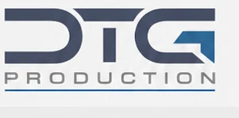

01 / STEEL
Konstrukcje stalowe
Konstrukcje z aluminium, stali węglowej i nierdzewnej, ramy, platformy i elementy instalacji.

ENGINEERING · MANUFACTURING · INSTALLATION
Kompleksowa produkcja konstrukcji stalowych, urządzeń technologicznych, zbiorników i rurociągów dla wymagających projektów przemysłowych.
O NASZEJ FIRMIE
DTG Production Sp. z o.o. realizuje projekty przemysłowe — od wsparcia inżynieryjnego i przygotowania produkcji, po wykonanie, kontrolę jakości i dostawę.
Wspieramy modernizacje istniejących instalacji, projektowanie i optymalizację produkcji, wykonawstwo maszyn, urządzeń, konstrukcji stalowych i instalacji procesowych. Nasze atuty to elastyczność, szerokie możliwości produkcyjne i indywidualne podejście.
Porozmawiajmy o projekcie ↗
NASZE KOMPETENCJE
Produkujemy elementy i kompletne rozwiązania dla energetyki, przemysłu chemicznego, środowiskowego i produkcyjnego.
Konstrukcje z aluminium, stali węglowej i nierdzewnej, ramy, platformy i elementy instalacji.

Zbiorniki magazynowe, aparaty i urządzenia ciśnieniowe wykonywane według wymagań projektu.

Prefabrykacja rurociągów, kanałów i systemów odpylania dla instalacji technologicznych.

Wyposażenie i moduły instalacji procesowych, modernizacje oraz rozbudowa linii technologicznych.

Urządzenia procesowe, podzespoły maszyn, wymienniki i specjalistyczne konstrukcje.

Skrubery, instalacje odpylania, kanały, obudowy i moduły przemysłowe.
ZAKRES WSPARCIA
Od szkicu technicznego i dokumentacji, przez przygotowanie produkcji, aż po kontrolę jakości, logistykę i montaż.
WYBRANE REALIZACJE
Wybrane fotografie produktów i instalacji przedstawione w katalogu DTG Production.


PODEJŚCIE DO REALIZACJI
Od dokumentacji technicznej i przygotowania produkcji do kontroli wykonania i organizacji dostaw. Zakres kontroli, dokumentowania i odbiorów uzgadniamy na potrzeby projektu.

KONTAKT
Prześlij opis projektu lub dokumentację techniczną. Skontaktujemy się w sprawie możliwości realizacji.